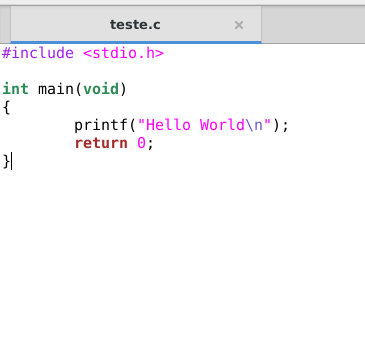
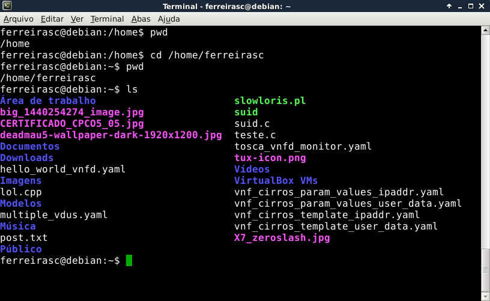
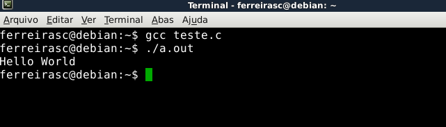

Uma breve explicação de como preparar seu ambiente, seja Windows ou Linux, para programar utilizando C. Direcionado aos alunos do Introcomp.
Introdução
** Antes de mais nada: O Introcomp recomenda que os alunos adotem alguma distribuição Linux para acompanhamento do curso, já que essa será a plataforma utilizada nos exemplos dados em todas aulas, seja em laboratório ou sala de aula.
Windows
O Introcomp indica dois ambientes de desenvolvimento (ou “IDE”) para programar em C nas plataformas Windows: O CodeBlocks e o DevC++. Como o CodeBlocks já foi explicado em sala de aula, tendo slides dedicados na “Aula 02”, estarei focando este tutorial no setup do DevC++, que na minha opinião é a IDE mais simples para desenvolvimento em C no Windows.
DevC++ - Passo a Passo
1 - Faça download do DevC++ no link: https://sourceforge.net/projects/orwelldevcpp/. Clicando no link verde escrito download, ele deve se iniciar automaticamente em 5 segundos.
2 - Feito o download, instale o DevC++. A menos que você deseje uma configuração personalizada da IDE, pode dar “Next” em todos os passos da instalação até concluir.
3 - Feito a instalação, você deverá encontrar uma tela como essa:

Abra um novo arquivo fonte para começar o desenvolvimento:

4 - Salve seu arquivo fonte para que ele possa ser reconhecido como um código em C. Para fazer isso, aperte CTRL+S ou navegue até o menu superior Arquivo->Salvar Como…

A seguinte janela deverá aparecer:

Conforme a imagem acima, em Save as type você deverá selecionar “C Source Files (*.c)” e em File name deverá entrar com o nome do seu código, que no meu caso foi “meu_codigo”. Isso fará com que na pasta Desktop, como indicado, seja criado um arquivo chamado “meu_codigo.c”. Clique no botão Save para finalizar.
5 - Tudo pronto pra desenvolver seu código:

6 - Para compilar e executar, aperte F11. Ou então, vá até o menu superior na aba Executar e selecione a opção Compilar & Executar. Nesse momento, um arquivo com extensão “.exe” de mesmo nome e na mesma pasta que seu código “.c” será criado. No caso deste exemplo, na pasta Desktop. Uma janela também será vista, com seu código já sendo executado:

Linux
Para aqueles que desejam programar em C na plataforma Linux, as coisas são ainda mais fáceis. Isso por que a maioria das distribuições Linux já carregam nativamente um compilador da linguagem C: o GCC. :-)
Portanto, para começar a desenvolver, você deverá primeiramente abrir um editor de texto de sua escolha (usarei o gedit) e salvar este arquivo com extensão “.c”, para que ele se torne um código na linguagem C. Neste exemplo, salvei meu arquivo como teste.c no diretório “/home/ferreirasc”.
Abra o terminal de sua distribuição Linux (caso seja Ubuntu, Ctrl+ALT+T deverá ser um atalho pra isso) e navegue até a pasta onde foi salvo seu arquivo “.c”. No caso deste exemplo, o arquivo teste.c está localizado em “/home/ferreirasc”, então:
Na figura acima, o terminal inicialmente apontava para o diretório “/home”, conforme mostrado pelo comando “pwd” (que me diz para qual diretório meu terminal está apontando no momento). Assim, é preciso navegar até onde o arquivo teste.c está localizado, ou seja, no “/home/ferreirasc”, com o comando “cd”. Isso pode ser visualizado com o comando “pwd” após o “cd”.
Ao listar os arquivos do diretório, com “ls”, o arquivo teste.c estará lá.
Para compilar e executar o arquivo teste.c, conforme visto em sala de aula:
 comments powered by Disqus